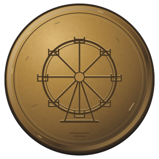

Visual approval checkpoint
A small game counter within the existing prize stall. Static staging only.
Review the stack, contact shadows, two waiting bags and the worn sign at phone size. Dents/scuffs suggest where past throws landed; the sign gives the objective without revealing where to aim. Optional circles show proposed generous aim areas, not working controls. No throws, falling cans, scoring, audio, token claim or ending playback is implemented here.
Return to the unchanged working prototype · Approved ending staging
Visual checkpoint 02
Complete static artwork & interface placement
Full static assembly with original horse and prize pixels. Play/Pause and hint are nonfunctional placement mockups.
Carriage before / after · Full scene comparison · Approved booth comparison
Compare the assembled artwork against the original, then inspect the isolated horses and prize pair. The lifted view uses small static offsets to reveal the repaired surfaces. There is no animation.
Play/Pause sits over the upper-left sky, away from the moon and attractions. A short hint sits over the bottom path. Both are static visual mockups. Hide them to review the artwork alone. Tall phones preserve the complete image with dark space above and below.
Focused artwork refinement
Matching open structure, with a restrained mysterious glow.
Ticket booth refinement
Same booth artwork, size and placement. Original foreground restored over its base.
Visual checkpoint 02
Original-pixel pieces, retained foreground, static interface mockups.
The third view uses fixed offsets, not animation. The ghost and cat remain a pair because they overlap in the reference. Alternate poses and individual prize separation are outside this checkpoint.
Phone-size preview and inspection controls
P1.6 · Story assets and storyboard
Eight active seconds. Static staging only; no story playback or bell trigger.
Change beats manually to inspect placement and reset. The bell is decorative here. Pausable motion, sound scheduling and story lockout will be implemented in P1.7; three-ring interaction and hints in P1.8.
CC0 sources and edits: credits. These independent audition controls belong only to this review page.
Return to current Phase 1 prototype · Storyboard and integration contract
Visual staging · awaiting approval
Static poses for the approved ten-second disappearance. Change stages manually; nothing plays.

Before claim: the token waits above the prize counter. The park remains fully visible.
The attractions disappear; the moonlit field stays visible. Pause and Revisit are nonfunctional placement mockups. The checkbox previews a later return option. No audio, timers, gameplay or progress persistence is implemented.
Inspect the token at its offered and final sizes, the separate attraction fades at 2/5 seconds, and whether the wheel reads as the last structure over the empty field at 8 seconds. A preview-only generated repair plate supplies land behind the original attractions; approved artwork files are unchanged. Intermediate times are proposed poses, not implemented playback.
Approved journey: three bell rings → musical horse puzzle → two-throw target game → claim the brass token → ten-second disappearance. Revisit and refresh will begin completely fresh journeys when gameplay is implemented.